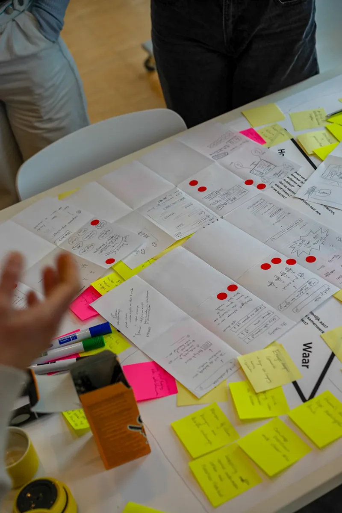

01
Het probleem
Enexis ondersteunt miljoenen klanten. In MIKA komen verschillende systemen, processen en gebruikersgroepen samen die dagelijks afhankelijk zijn van betrouwbare digitale ondersteuning.
Gebruikers werkten met grote hoeveelheden informatie, verschillende werkwijzen en afhankelijkheden tussen teams. De ketenprocessen waren complex, de ervaring was niet overal consistent en de cognitieve belasting was hoog.
02
Wat ik ontdekte
De kennis om het werk goed te doen zat vooral in de hoofden van mensen, niet in het systeem.
Bij het analyseren van gebruikersprocessen en operationele workflows bleek hoe afhankelijk medewerkers waren van specialistische kennis en eigen werkwijzen. Dat maakte het werk foutgevoelig en lastig over te dragen. Het ontwerp moest die kennis in de flow zelf stoppen.

03
Keuzes en afwegingen
Uitval stap voor stap afhandelen
Een aanvraag met uitval toont alle uitvalredenen als stappen, zoals zakenpartner, EAN-correctie en dubbele aanvraag. Medewerkers zien waar ze zijn en wat er nog moet.
Pas verder als het klopt
Per regel bevestigt de medewerker de juiste keuze. Pas als alles is afgehandeld, wordt de knop naar de volgende uitvalreden actief, en een afgeronde regel kleurt groen.
Altijd terug kunnen
Een vorige uitvalreden is op elk moment terug te halen. Zo durven mensen door te werken zonder bang te zijn iets kwijt te raken.
Dezelfde patronen overal
Tabellen, accordeons, statussen en knoppen werken in heel MIKA hetzelfde, gebaseerd op het Mendix-design system in Enexis-huisstijl.